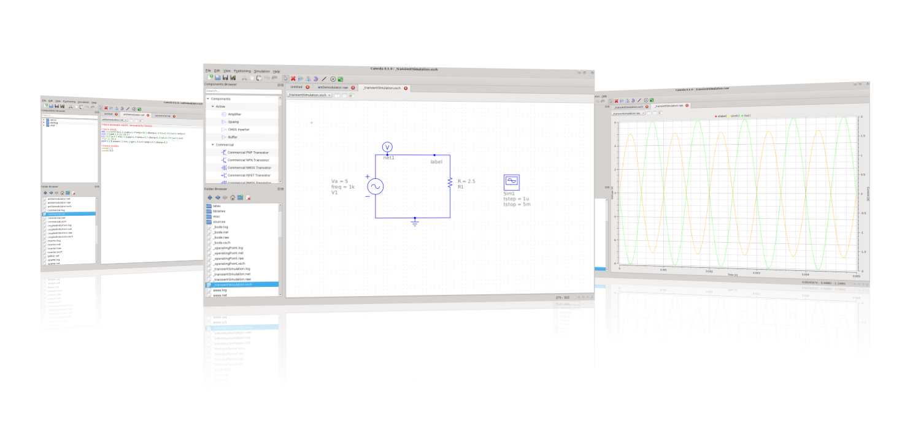

Caneda
Open source EDA software
Help Index
Caneda is an open source EDA software focused on easy of use and
portability. Caneda's goal is the complete design proccess from schematic
capture, through simulation and into circuit layout and PCB.
While in the short term schematic capture and simulation is the primary goal,
in the long term future, PCB and layout edition will be covered. The software
aims to support all kinds of circuit simulation types, e.g. DC, AC, S-parameter
and harmonic balance analysis.

Table of Contents
Getting started...
Description of Caneda file formats